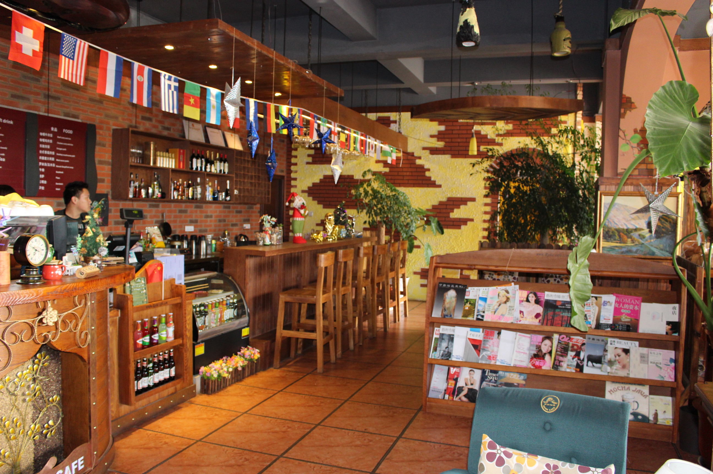

咖啡加盟开业知识准备您的当前位置:首页>罗纳动态>咖啡加盟开业知识准备
-

有一种误解是：一直吸烟，还不是健健康康地活到了八十多岁
2016-11-08
比较其他餐饮项目，如今中式快餐行业的发展速度快，特别是不同风格，适合南北消费者的品牌是越来越多了，此刻抓紧时间投资创...
-

咖啡加盟:传统单体咖啡店下一步该何去何从？
2016-11-08
随着西方文化的传入，很多人在饮食方面开始接触西点。那么，对于西点中最不能缺少的咖啡，你知道它的文化历史么?而加盟咖啡...
-

咖啡馆里如何为顾客提供优质服务|咖啡加盟
2016-11-08
咖啡店工作日常规范 一、开、闭店 (I)"iII安排)「店的员I-正常IM: (2)开店准备时间为半...
-

选择单干？还是加盟？我来给你支招！
2016-11-08
随着80后渐渐成为社会中坚力量，90后纷纷进入社会工作，年轻一代正逐渐成为消费的主力军。这一代人在互联网的影响之下，...